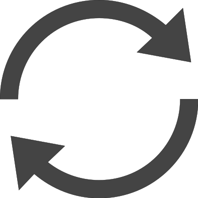
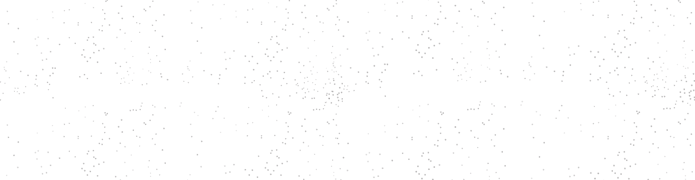
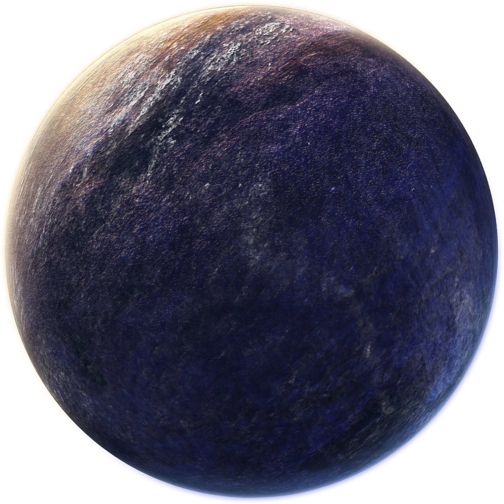
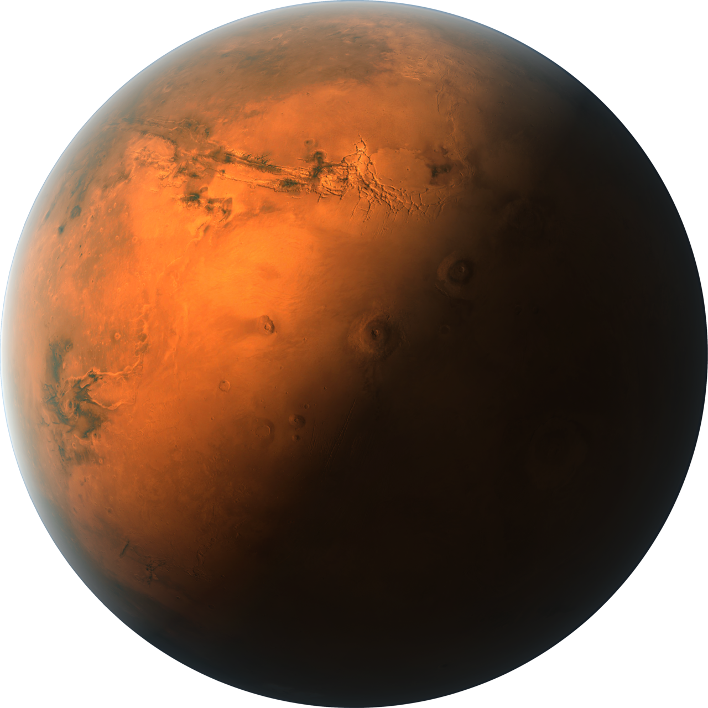
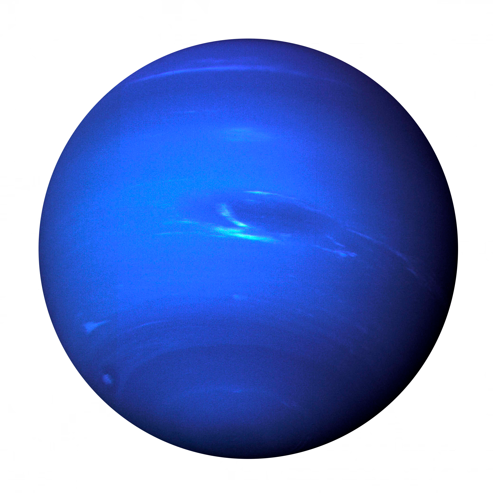

WebSpur
Это мой "Дневник Программиста" а так же будущая шпаргалка.
Но ты, Зритель, тоже можешь ей пользоваться.
Надеюсь дизайн не вырвеглазненький.
Теги HTML
position: absolute | fixed | relative | static | inherit; - устанавливает способ позиционирования элемента.
absolute - указывает, что элемент абсолютно
позиционирован, при этом другие элементы отображаются на веб-странице
словно абсолютно позиционированного элемента и нет. Положение элемента
задается свойствами left, top, right и bottom, также на положение влияет
значение свойства position родительского элемента. Так, если у родителя
значение position установлено как static или родителя нет, то отсчет
координат ведется от края окна браузера. Если у родителя значение
position задано как fixed, relative или absolute, то отсчет координат
ведется от края родительского элемента.
fixed - По своему действию это значение близко к absolute, но в отличие от него привязывается к указанной свойствами left, top, right и bottom точке на экране и не меняет своего положения при прокрутке веб-страницы.
relative - оложение элемента устанавливается относительно его исходного места.
fixed - По своему действию это значение близко к absolute, но в отличие от него привязывается к указанной свойствами left, top, right и bottom точке на экране и не меняет своего положения при прокрутке веб-страницы.
relative - оложение элемента устанавливается относительно его исходного места.
opacity - прозрачность элемента. (Чем больше значение, тем главнее элемени)
overflow: auto | hidden | scroll | visible | inherit - отображение собержимого контента в блоке.
visible - отображается все содержание элемента, даже за пределами
установленной высоты и ширины.
hidden - отображается только область внутри элемента, остальное будет скрыто.
scroll - всегда добавляются полосы прокрутки.
hidden - отображается только область внутри элемента, остальное будет скрыто.
scroll - всегда добавляются полосы прокрутки.
line-height: - Межстрочный отступ.
CSS стили
Тут будут разные стили из CSS.
box-sizing: content-box | border-box | padding-box | inherit; - изменения алгоритма расчета ширины и высоты элемента
content-box - Свойства width и height задают ширину и
высоту контента и
не включают в себя значения отступов, полей и границ.
border-box - Свойства width и height включают в себя значения полей и границ, но не отступов.
padding-box - Свойства width и height включают в себя значения полей, но не отступов и границ.
inherit - Наследует значение родителя.
border-box - Свойства width и height включают в себя значения полей и границ, но не отступов.
padding-box - Свойства width и height включают в себя значения полей, но не отступов и границ.
inherit - Наследует значение родителя.
line-height: ; - устанавливает межстрочный интервал
cursor: default | help | pointer | progress | text | wait | url('путь')
font-weight: bold| bolder| lighter| normal| 100| 500| 900
bold - полужирное начертание
normal - нормальное начертание
Значения bolder и lighter изменяют жирность относительно насыщенности родителя
И единици измерения от 100 до 900 с шагом 100.
user-select:none: - Управляет поведением выделения текста и других элементов на странице, в частности, позволяет запретить выделение текста.
Flex
flex это прям оч нужная штука, щас убедишься
flex-wrap: - Флексы выстраиваются в несколько строк
nowrap - выстраиваються в одну линию
wrap - выстраиваються в несколько линий
flex-flow: - просто совмещает в себе flex-direction и slex-wrap (row nowrap)
flex-direction: - направление флекс элементов
1
2
3
4
5
6
row
row-revert
column
column-revert
order:number: - устанавливает порядок следования элементов
1
2
3
4
5
6
К элементу №
применить order:
align-content: - распростронения пространства между и вокруг флекса, одязательное значение flex-wrap:wrap и подобное
stretch
flex-start
flex-end
center
1
2
3
4
5
6
space-between
space-around
space-evenly
align-self: - align-items для одного элемента (или отдельных)
1
2
3
4
5
6
Для элемента № применить:
stretch
flex-start
flex-end
center
flex-grow: - Определяет, сколько пространства может занимать флекс внутри контейнера. В качестве значения принимаются числа, они задают пропорции каждого флекса. К примеру, если для всех элементов установлено значение 1, то они получатся равного размера. Если какой-то элемент получил значение 2, то его размер будет в два раза больше остальных.
1
2
3
Для элемента №
применить значение
Grid
Начнём с основ, разделим блок на Grid зоны
Упращу себе жизнь не праписывая по 2 раза, orientation = rows или columns
Для этого нужно прописать display:grid; Теперь расчертим секции
grid-template-orientation: % или fr;
columns = 3 rows = 2
columns =
rows =

grid-orientation-(start или end): - для позиционирования отдельных элементов
grid-template-areas: - важная вещь в выстраивании сетки, значение писать так:
"1
1
2"
"3
3
4"
"3
3
4";
потом, каждый номер присваивать соответствующему элементу, .name1{grid-area:name1}. Цифры кстати нельзя, нужно соблюдать правила.
Блок адаптации
И так, начнём с адаптивной рабочей области. Для этого просто делаем у неё максимальную ширину (Например в 1280px (max-width:1280px)) и задаём что бы она занимала 100% доступной ширины (width:100%).
Так же я предпочитаю использовать библиотеку Stickjaw, одна из её функций, это изменение высоты относительно ширины.
Пример: высота будет 0.5 от ширины в 30%. data-proportion-h="0.5"
height = 180
width = 360
Псевдоклассы
:after - добавляет текс после элемента, можно сделать подсказку.
Сoбачка
Фон
Думаю, ты уже увидел фон странички, это background-image и ещё немного текста, но об этом я сейчас расскажу.
Устанавливается фон картинкой, через background-image:url(); Использовать GIF
Так же, выравнивание через background-position:center;
Фиксированное положение background-attachment:fixed;
Маштабируем этим background-size:cover;(сохранение пропорций, чтобы его ширина или высота равнялась ширине или высоте блока)
Ну и что бы не повтарялось, background-repeat: no-repeat;
input
Решил выделить input в отдельную секцию, потому что он обширный и проще всё показать, а не прописать текстом.
input это поле ввода, вот пример
input это не только поле, но и кнопки, флажки и подобное.
type:
button -
file -
image -
password -
file -
image -
password -
Анимация
Начнём с простой анимации, точнее с @keyframes
Синтаксис keyframes name { 25%{} 50%{} 75%{}} - можно больше или меньше
Сделаем анимацию с плавным изменением цвета фона:
div{
animation: aminBackgroundColor 5s ease infinite;
}
@keyframes aminBackgroundColor{
0%{background-color: rgb(61, 139, 58);}
25%{background-color: rgb(25, 170, 148);}
50%{background-color: rgb(58, 100, 139);}
75%{background-color: rgb(111, 58, 139);}
100%{background-color: rgb(181, 78, 33);}
}
animation: aminBackgroundColor 5s ease infinite;
}
@keyframes aminBackgroundColor{
0%{background-color: rgb(61, 139, 58);}
25%{background-color: rgb(25, 170, 148);}
50%{background-color: rgb(58, 100, 139);}
75%{background-color: rgb(111, 58, 139);}
100%{background-color: rgb(181, 78, 33);}
}
Анимация
Scrollbar
Сейчас, будем делать пользовательский скрол бар
::-webkit-scrollbar : скролбар ;
Давай изменим его ширину, какую ты хочешь?

parallax
Паралакс очень интересная и нужная тема, для него я использую библиотеку parallax.js, вот один из примеров:




Изображения
Увеличение
Паралакс
Циклы
for(var i=0; i>5; i++){function}; "for(начало; условие; шаг)"
while(i>5){function}
do {alert( i ); i++;} while (i < 3); Выполняем "do" пока верно условие while
Логические операторы
оператор "И" = &&
оператор "ИЛИ" = ||
оператор "НЕ" = !
Массивы
Обьявить массив - var array = [];
Заменить элемент массива - array[0] = "hi";
Общее число масивов, можно вывести командой - alert(array.length);
Многомерный масив - var array[ [1, 2], [3, 4], [5, 6], ];
Обращение к такому масиву - alert( array[1][0] ); - выведет "3"
unshift - добавляет элемент в начало, array.unshift("hi", "hello")
push - добавляет элемент в конец, array.push("hi")
shift - удаляет первый элемент, возвращает его и сдвигает очередь, array.shift()
pop - удаляет последний элемент и выводит его, array.pop()
Команды GIT
Тут я собиру команды которые мне интересны, потому что я понимаю, что потом я их не найду
git config --global user.name имя - сменить имя
git config --global user.gmail почта - сменить почту
git config --list - выведет установленные правила (имя, почту, ..)
ls - список файлов в текущей деректории
ls -a - показ всех файлов, даже скрытых
cd название директории - перейти в другую директорию (можно ввести несколько символов и нажать Tab для авто заполнения)
cd .. - выйти на уровень выше в директории
mkdir название - создать папку
touch название.расширение - создать файл
cp название кудаСкопировать - копировать файл
mv название новоеНазвание - переименовать файл/папку
echo "вывод" - вывести что-то в терминал
echo "вывод" > название.расширение - вывести в файл
cat название - посмотреть содержимое файлаы
rm название - удалить файл
git init - создать репазиторий в выбранной папке
git status - текущее состояние репазитория
git remote add название ссылкаНаГитХаб - что бы связать репозитории (в названии пишется в основном "origin")
git remote -v - проверить подключение репазитория
git add название - добавить файл в индекс изменений (коммит)
git rm --cached - удалить файл из индекса изменений (коммита)
git commit - сообщение к комиту
git commit -am 'сообщение' - сообщение к комиту
git restore название - удалить файл из коммита
.gitkeep - сохронять пустые дириктории в общей дериктории
.gitignore 'сообщение' - игрнорировать файлы в деректории
git log - посмотреть историю коммитов
git log --oneline - сокращённая история коммитов
git reset хеш - сбростекущего состояния коммита
git reflog - история всех операций
git revert - отмена последствий коммита
git branch - просмотреть ветви репозитория
git branch название - создать ветку
git branch -d название - удалить ветку
git checkout название - переключиться на ветку
ssh-keygen - сгенерировать SSH ключ
git clone SSHпуть названиеПапки - клонировать репозиторий
git push - загрузить все изменения
git push --delete origin название - удалить ветки с удалённого репозитория
git pull - скачать все изменения
git fetch - подгрузить информацию о ветках
git merge название - соединить ветки
git checkout название - переключиться на ветку
git tag версия - присвоить версию программе
git tag (--list) - проверить версию данного коммита
git push --tags - загрузить версию в репозиторий
git tag -d версия - удалить тег версии
git push --delete origin версия - удалить версию из репозитория